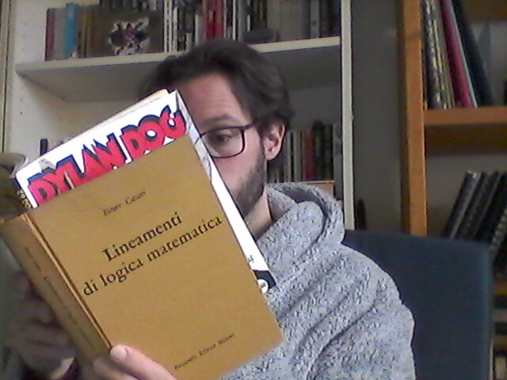

Leonardo Ceragioli's (very retro) Homepage

Research Interests
I'm interested in liberalizations and extensions of traditional proof-theoretic semantics.
In my PhD, I've developed various single-assumption single-conclusion systems where logical terms can be introduced in the scope of other connectives.
I've investigated meaning-dependence between logical terms and discussed harmony for these systems.
Now, I'm focusing on further extensions: bilateral, modal, and (more recently) probabilistic.
Accademic Articles
- Leonardo Ceragioli, Peano's counterexample to Harmony Theoria 85 (6), pp. 459-484. DOI: https://doi.org/10.1111/theo.12217 (2019)
- Leonardo Ceragioli, Ex falso and Proof-Theoretic Validity in Bellotti e Turbanti (ed.) Fourth Pisa Colloquium in Logic, Language and Epistemology, Edizioni ETS (2021).
- Leonardo Ceragioli, New problems for Tennant's definition of harmony Theoria 88 (4), pp. 829-849. DOI: https://doi.org/10.1111/theo.12400 (2022)
- Leonardo Ceragioli, Single-Assumption Systems in Proof-Theoretic Semantics Journal of Philosophical Logic 51, pp. 1019-1054. DOI: https://doi.org/10.1007/s10992-022-09658-4 (2022)
- Valentina Luporini and Leonardo Ceragioli, Intuition is not (always) immediate, and this is good news! Bulletin d'Analyse Phénoménologique XIX Numéro 3 (Actes 13), pp. 180–204. https://popups.uliege.be/1782-2041/index.php?id=1402 (2023)
- Leonardo Ceragioli, Which Ecumenical System for Classical and Intuitionistic Logics? in Bellotti, Moriconi e Turbanti (ed.) Fifth Pisa Colloquium in Logic, Language and Epistemology, Edizioni ETS (2023).
- Leonardo Ceragioli, Bilateral Rules as Complex Rules Bulletin of the Section of Logic 52(3), pp. 329-375. DOI: https://doi.org/10.18778/0138-0680.2023.13 (2023)
- Leonardo Ceragioli, Inferential Semantic Contamination, Harmony and Realist Pollution Synthese 205(123). DOI: https://doi.org/10.1007/s11229-024-04871-x (2025)
Educational Articles
Talks
- Leonardo Ceragioli, Is Logical Disagreement Possible in Inferentialism? Early-career masterclass on Logical Epistemology, University of Bergen (2019)
- Leonardo Ceragioli, Normativity of Logic and Change of Subject ’8th WFAP Graduate Conference (Logic Rulez!?), University of Vienna (2019)
- Leonardo Ceragioli, Peano’s Counterexample to Harmony Second Graduate Conference of the Italian Network for the Philosophy of Mathematics, University Vita-Salute San Raffaele of Milan (2019)
- Leonardo Ceragioli, Meaning-Dependence and Weak Separability in Bilateral Systems Bilateralism and Proof-Theoretic Semantic, Ruhr University Bochum (2022)
- Leonardo Ceragioli and Valentina Luporini, Intuition is not (always) immediate, and this is good news! 6th Creph Annual Seminar 2022: Pick up your eyes: Mediated intuitions and evidence-producing devices, University of Liège (2022)
- Leonardo Ceragioli, Paradossi e revisione della logica: il caso sotto-strutturale Filosofia Analitica Oggi, University of Pisa (2023)
- Leonardo Ceragioli, Semantic Pollution: Explicit, Implicit or Structural? Scuola Normale Superiore of Pisa (2024)
- Leonardo Ceragioli, Semantic Pollution for Modal and Classical Logic University of Florence (2024)
Teaching
- Course on disagreement in logic for the PhD program University of Rome Tor Vergata (2024): Poster
Groups and Projects
Contacts
Send email to leo.crg.uni@gmail.com